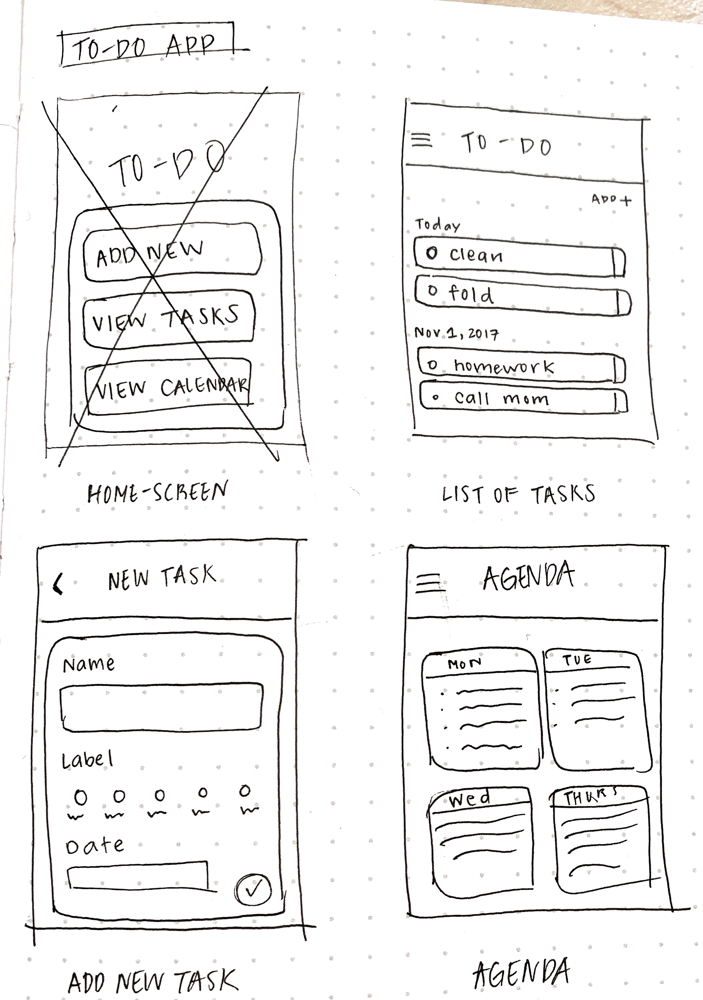
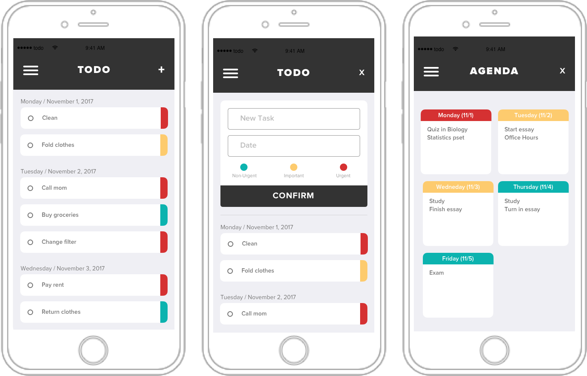

Context
A todo app allows a user to create groups with his or her friends and add tasks inside that will be shared to everyone in the group. The user also has the option to view all tasks created by him or shared with him, ordered by priority.
Class: Programming User Interfaces
User Goals
The goal of a user is to create and share tasks with his or her friends in the most efficient, intuitive way possible. The targeted use of the app is aimed toward people who wish to share a to-do list with a specific group of people. It is focused toward more permanent groups, groups that won’t change after just one task; for example, home, work, or project groups. The todo can help people that live together to easily organize chores and tasks that will be shared to the rest of the household.
Process
To start, I downloaded other todo mobile and web applications and searched for their strengths and weaknesses.
Paper Prototypes
User Studies
I recruited colleagues and friends to conduct task analyses using the paper prototype. The main takeaways I discovered were:
Design Considerations
I mainly took into consideration the ease in which a user should be able to create. I kept the action of adding a new task simple, allowing a user to name the task, choose a date, and select its priority.
Product
